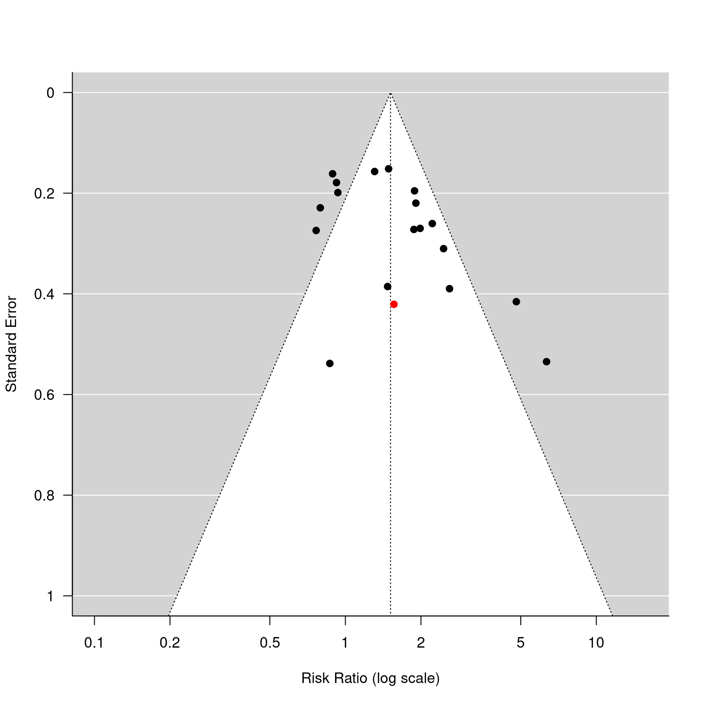
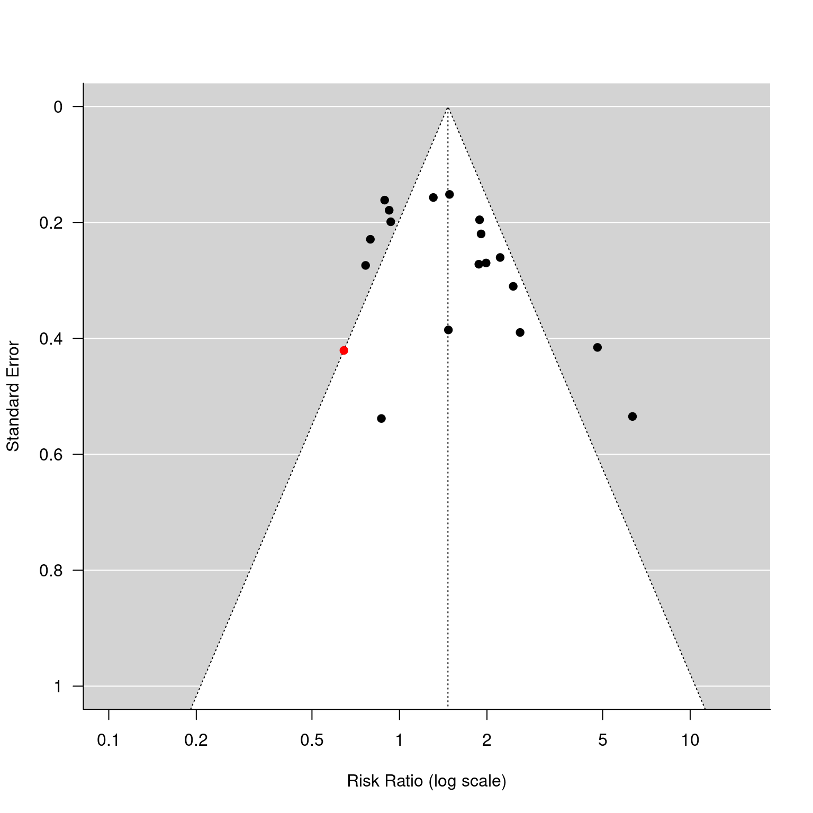

dat.dorn2007.RdResults from 19 trials examining complementary and alternative medicine (CAM) for irritable bowel syndrome (IBS).
dat.dorn2007
The data frame contains the following columns:
| id | numeric | trial id number |
| study | character | (first) author |
| year | numeric | publication year |
| country | character | country where trial was conducted |
| ibs.crit | character | IBS diagnostic criteria (Manning, Rome I, Rome II, or Other) |
| days | numeric | number of treatment days |
| visits | numeric | number of practitioner visits |
| jada | numeric | Jadad score |
| x.a | numeric | number of responders in the active treatment group |
| n.a | numeric | number of participants in the active treatment group |
| x.p | numeric | number of responders in the placebo group |
| n.p | numeric | number of participants in the placebo group |
The dataset includes the results from 19 randomized clinical trials that examined the effectiveness of complementary and alternative medicine (CAM) for irritable bowel syndrome (IBS).
The data were extracted from Table I in Dorn et al. (2009). Comparing the funnel plot in Figure 1 with the one obtained below indicates that the data for study 5 (Davis et al., 2006) in the table were not the ones that were used in the actual analyses.
Dorn, S. D., Kaptchuk, T. J., Park, J. B., Nguyen, L. T., Canenguez, K., Nam, B. H., Woods, K. B., Conboy, L. A., Stason, W. B., & Lembo, A. J. (2007). A meta-analysis of the placebo response in complementary and alternative medicine trials of irritable bowel syndrome. Neurogastroenterology & Motility, 19(8), 630--637. https://doi.org/10.1111/j.1365-2982.2007.00937.x
### copy data into 'dat' and examine data dat <- dat.dorn2007 dat#> id study year country ibs.crit days visits jadad x.a n.a x.p n.p #> 1 1 Bensoussan 1998 Australia Rome I 112 7 5 29 38 11 32 #> 2 2 Blanchard 1992 USA Other 84 12 3 20 31 21 30 #> 3 3 Brinkhaus 2005 Germany Other 126 5 5 14 23 30 46 #> 4 4 Carling 1989 Sweden Other 14 2 3 17 30 5 13 #> 5 5 Davis 2006 UK Rome II 30 2 5 11 27 6 23 #> 6 6 Dew 1984 Wales Other 14 NA 2 24 29 5 29 #> 7 7 Gade 1989 Denmark Other 28 3 4 26 32 9 22 #> 8 8 Halpern 1996 USA Manning 42 NA 5 17 18 13 18 #> 9 9 Kim 2003 USA Rome II 56 NA 4 4 12 5 13 #> 10 10 Leung 2006 Hong Kong Rome II 56 2 5 21 60 26 59 #> 11 11 Lu 2005 Singapore Rome II 56 NA 3 15 17 8 17 #> 12 12 Madisch 2004 Germany Rome II 28 3 4 37 51 20 52 #> 13 13 Nash 1986 England Other 14 NA 4 13 33 17 33 #> 14 14 Niedzielin 2001 Poland Manning 28 2 3 19 20 3 20 #> 15 15 Olesen 2000 Denmark Manning 84 5 5 29 50 30 46 #> 16 16 Rees 1979 Wales Other 21 NA 1 13 16 5 16 #> 17 17 Sallon 2002 Israel Rome I 84 4 5 25 33 8 26 #> 18 18 Yadav 1989 India Other 42 NA 5 37 57 17 50 #> 19 19 Whorwell 2006 UK Rome II 28 2 5 55 90 37 90### calculate log risk ratios and corresponding sampling variances dat <- escalc(measure="RR", ai=x.a, n1i=n.a, ci=x.p, n2i=n.p, data=dat) ### random-effects model res <- rma(yi, vi, data=dat, digits=2, method="DL") res#> #> Random-Effects Model (k = 19; tau^2 estimator: DL) #> #> tau^2 (estimated amount of total heterogeneity): 0.14 (SE = 0.07) #> tau (square root of estimated tau^2 value): 0.38 #> I^2 (total heterogeneity / total variability): 71.15% #> H^2 (total variability / sampling variability): 3.47 #> #> Test for Heterogeneity: #> Q(df = 18) = 62.40, p-val < .01 #> #> Model Results: #> #> estimate se zval pval ci.lb ci.ub #> 0.41 0.11 3.85 <.01 0.20 0.63 *** #> #> --- #> Signif. codes: 0 ‘***’ 0.001 ‘**’ 0.01 ‘*’ 0.05 ‘.’ 0.1 ‘ ’ 1 #>#> #> pred ci.lb ci.ub pi.lb pi.ub #> 1.51 1.23 1.87 0.70 3.25 #>### funnel plot with study 5 highlighted in red funnel(res, atransf=exp, at=log(c(.1, .2, .5, 1, 2, 5, 10)), ylim=c(0,1), steps=6, las=1, col=ifelse(dat$id == 5, "red", "black"))### change log risk ratio for study 5 dat$yi[5] <- -0.44 ### results are now more in line with what is reported in the paper ### (although the CI in the paper is not wide enough) res <- rma(yi, vi, data=dat, digits=2, method="DL") predict(res, transf=exp)#> #> pred ci.lb ci.ub pi.lb pi.ub #> 1.47 1.18 1.82 0.67 3.23 #>### funnel plot with study 5 highlighted in red funnel(res, atransf=exp, at=log(c(.1, .2, .5, 1, 2, 5, 10)), ylim=c(0,1), steps=6, las=1, col=ifelse(dat$id == 5, "red", "black"))